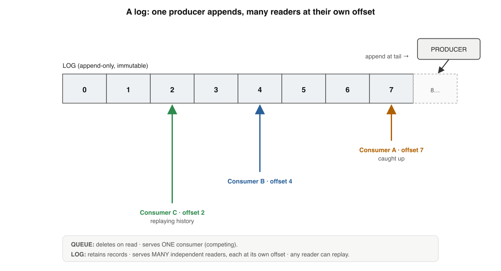
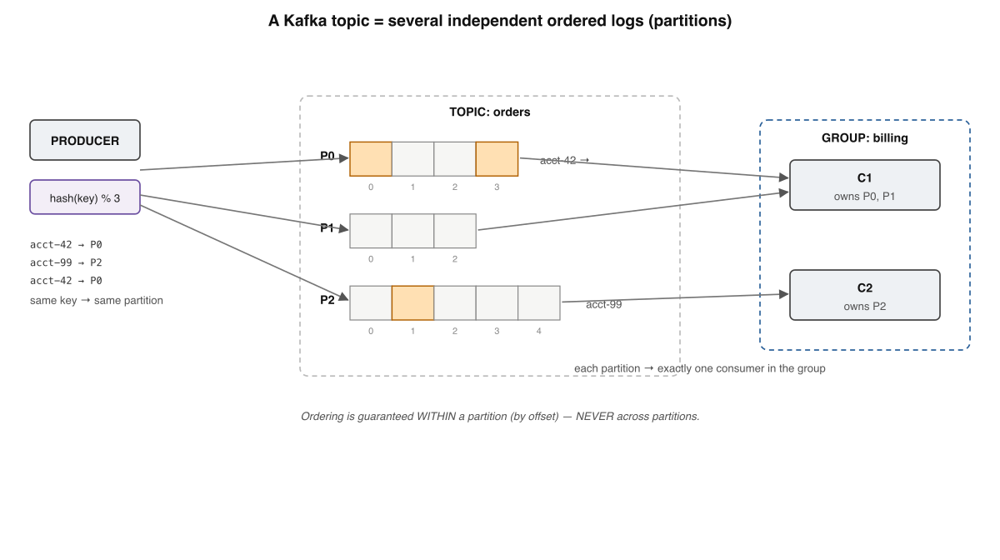
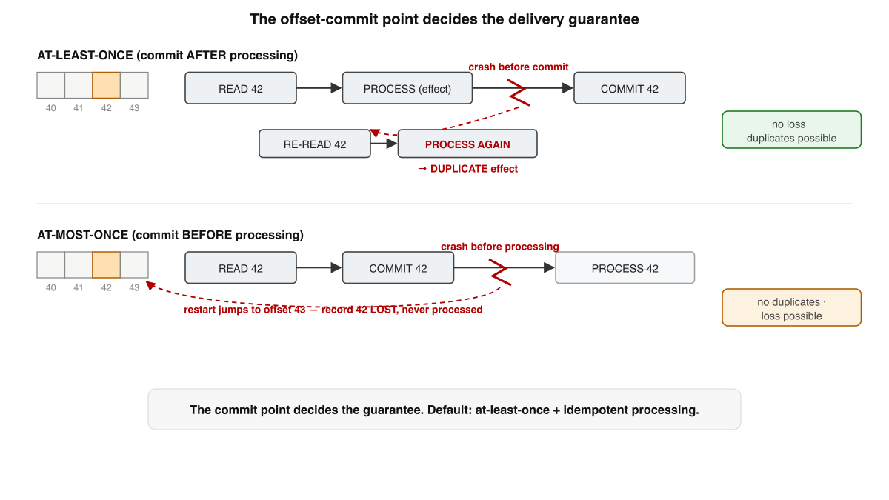
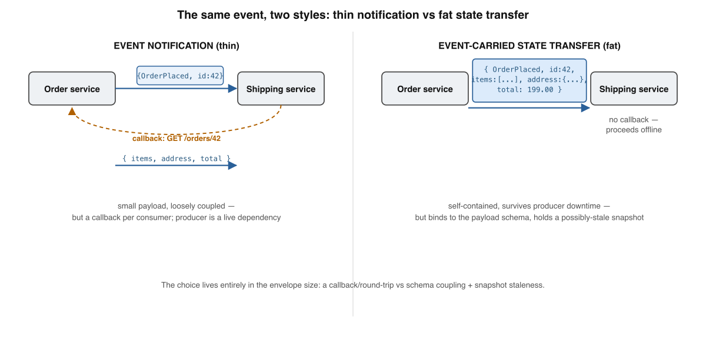
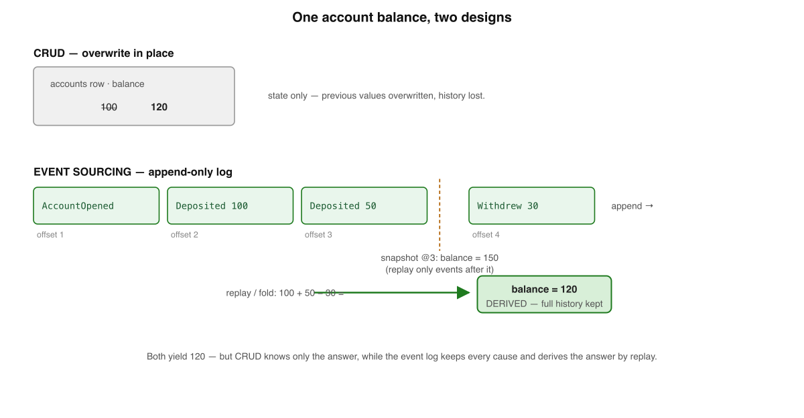
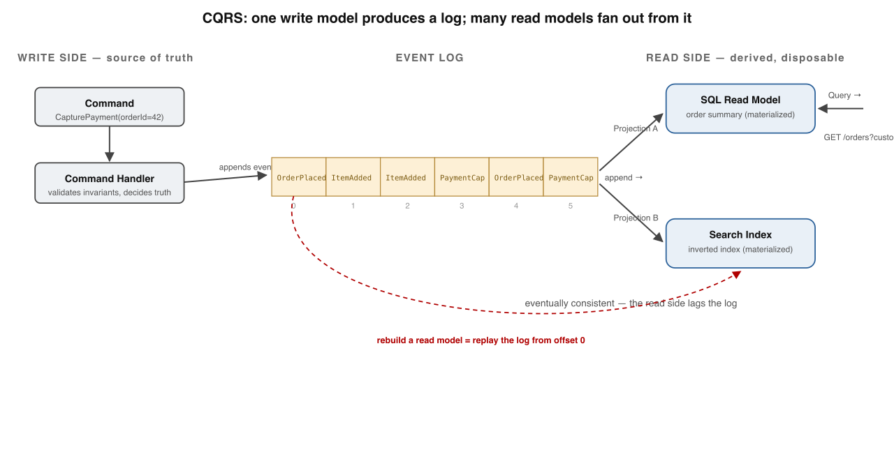
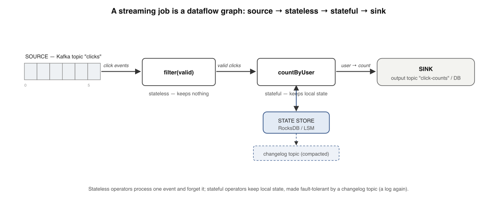
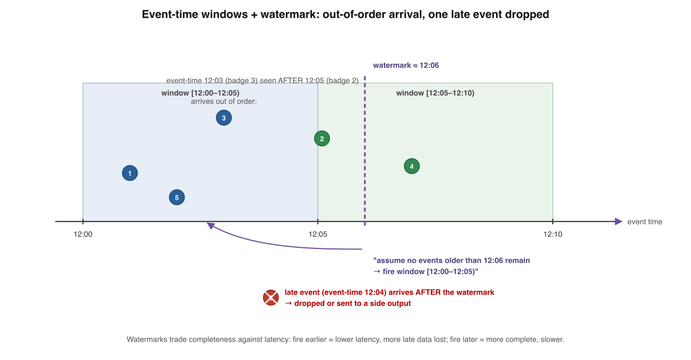
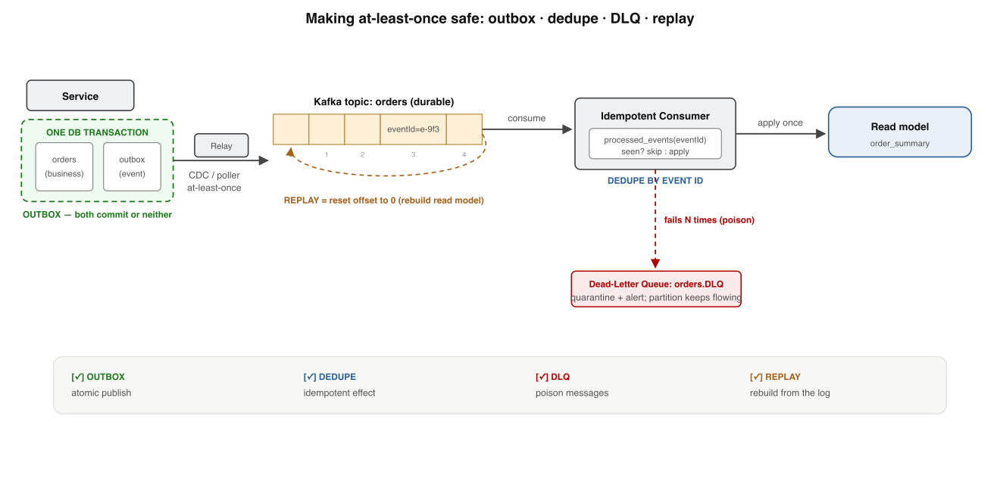

Your bar: reconstruct the whole streaming stack on a whiteboard from memory — to tell a sound
event-driven design from cargo-culted "we use Kafka." Every level is built to be seen and redrawn, not read.
Grounded in Kleppmann's DDIA Ch. 111, Kreps's The Log2, Fowler's pattern essays3, and the Dataflow paper.4
One structure holds the whole book. Every level just unpacks one chip of it:
It's all one append-only logsharded into Kafka partitionsread by offset, replayableinto events, state & windows
Memorise this banner. Every level below adds or explains one box, one arrow, or the replay loop.
1
The Log — the one structure under everything
The WAL, the LSM commit log, the outbox — all the same shape. This book makes it the protagonist.

A log is an append-only strip of numbered cells with one producer and many independent readers. Offsets 0–7 run left to right; a producer appends at the tail while consumers A, B, and C each track their own position, reading the same retained records at their own pace.
Is An append-only, totally-ordered, immutable sequence of records, each at a monotonic offset — its identity and its position.
Why it exists The offset is a logical clock for one log: it buys the total order Book 1 said you usually can't have — by giving up distribution.
Like (Book 3) The WAL, the LSM commit log, the outbox — Kreps's insight: the log a DB keeps for itself is the log you want between systems.2
The payoff Immutable + ordered = deterministically replayable. Replication, recovery, event sourcing, reprocessing all stand on it.
Message queue
Log
On read
deletes the message
retains the record
Consumers / message
one (competing)
many (independent)
Reader's position
held by the broker
an offset per consumer
Replay history
not possible
seek to any offset
✗ "A log is just a fancy message queue"
✓ A queue deletes on ack; a log retains and lets many readers each keep an offset1
🪵 Memory rule: A log is append-only, ordered, immutable, offset-addressed — reading never consumes, so it's a shared, replayable source of truth.
Memory check
Four load-bearing properties? → append-only, totally-ordered, immutable, offset-addressed
What does the offset collapse a reader's position to? → a single integer
Log vs queue on read? → retain & multi-read vs delete & point-to-point
2
Kafka — one log becomes many
Cut the log into partitions, spread them across brokers. You scale both directions — at one cost: order.

A Kafka topic split into three partitions, each an independent ordered log addressed by offset. Ordering is guaranteed within a partition and nowhere across them.Choose the key to be the entity whose history must stay ordered (accountId). Partition count is your throughput dial and your consumer-parallelism ceiling.
Topic / partition A topic is a set of partitions; each partition is one append-only log. Partition = the unit of parallelism, ordering, replication.
Ordering boundary Strict total order within a partition; none across them. No global offset — Book 1's "no global clock," honoured.
Consumer groups Each partition → exactly one consumer in the group; two independent groups each see the whole topic (fan-out).
Replication Each partition has a leader + ISR followers (factor 3). acks=all + min.insync.replicas=2 + no unclean election = durable.
✗ "Kafka orders the whole topic for me"
✓ Order lives only inside a partition; design is deciding what must share one
🗂️ Memory rule: A topic is many ordered logs; key routes an entity's history to one partition; groups divide partitions to scale reads; replication keeps each alive.
Memory check
Where does ordering hold? → within a partition only
3 partitions, 5 consumers in a group? → 3 active, 2 idle
Why never grow partition count casually? → hash % N changes break key locality
3
Delivery guarantees — one choice decides everything
A consumer does two things per record: process and commit. Where the crash lands is your guarantee.

The offset-commit point decides the delivery guarantee. A crash between process and commit reprocesses the record (at-least-once); a crash between commit and process loses it (at-most-once).
Order
Crash falls between
Outcome
Guarantee
process → commit
process & commit
record re-read, reprocessed
at-least-once
commit → process
commit & process
record skipped, gone
at-most-once
The trap "Exactly-once delivery" is impossible over an unreliable channel (Book 1, two generals). You build exactly-once processing — the effect happens once.
The default at-least-once + an idempotent consumer: dedup by a stable id, or set an absolute value, or upsert by event id. Reprocessing becomes a no-op.
Kafka EOS Idempotent producer (PID + sequence) drops retried writes; transactions bind output records + offset commit atomically (read_committed).
The boundary EOS holds only inside Kafka. Charge Stripe or write Mongo, and you're back to idempotency keys + the outbox (Book 2).
✗ "enable.auto.commit gives me at-least-once"
✓ Auto-commit fires on a timer before your work finishes → leans at-most-once; disable it, commitSync after the effect
🎯 Memory rule: Commit after processing = at-least-once (dupes); before = at-most-once (loss). Default to the first and make the consumer idempotent.
Memory check
Commit before processing → which guarantee? → at-most-once
How do you reach exactly-once effects? → at-least-once + idempotent consumer
Where does Kafka EOS stop? → at any external side effect
4
Events vs Commands vs State — what goes on the topic
The tense is the tell: imperative verb = command (rejectable); past participle = event (a fact).

The same OrderPlaced event, modelled thin versus fat. Left — an event notification carrying only an id forces a callback; right — event-carried state transfer ships the full payload, so the consumer needs no callback.
CommandPlaceOrder — imperative, may be rejected, one handler, expects a response. Couples sender to one receiver.
EventOrderPlaced — past-tense fact, cannot be rejected, broadcast. Couples the producer to nothing. Honesty rule: true even if no one listens.3
Notification (thin){ orderId: 42 } — consumer calls back for detail. Loose coupling, but a round-trip and a sync dependency.
State transfer (fat){ orderId, items, address, total } — no callback, survives producer downtime, but binds to the payload schema and freezes a snapshot.
Notification (thin)
State transfer (fat)
Coupling
loose — pulls what it needs
tighter — binds to schema
Availability
fails if producer is down
survives producer downtime
Staleness
reads latest on callback
holds a frozen snapshot
✗ "Dress a command up as a past-tense event"
✓ If exactly one consumer must run, it's a command in disguise — you lost the decoupling events buy3
📣 Memory rule: Command = rejectable request to one handler; event = immutable broadcast fact. Thin events callback; fat events ship a snapshot you must keep evolving.
Memory check
Tense test for command vs event? → imperative verb vs past participle
Cost of a thin event? → a callback + the producer becomes a sync dependency
Why does event schema evolution bite harder than API? → events live forever & get replayed
5
Event sourcing — the log is the state
Stop treating the log as a recovery aid behind your "real" state. Make the log the real state.

Two ways to know an account holds 120. The top row is destructive CRUD; the bottom row is an append-only event log folded into the same answer.No balance field anywhere — it's an opinion about the events. A snapshot is an optimization, never the source of truth.
Is Store every change as an immutable ordered event; current state is derived by folding the log. The events are the truth.3
vs CRUD CRUD overwrites in place — keeps the what, throws away the why and when. Event sourcing never overwrites; corrections are new events.
You gain A complete audit log by construction, time-travel to any past state, and freedom to build new read models retroactively.
You pay Replay (so you keep snapshots) + eternal schema versioning — you can never migrate old events, they're historical facts.1
Aggregate The consistency boundary (one Account) you rebuild & validate against; the decision reads state, the result writes an event.
Event store Append-only DB keyed by aggregate id; one hard guarantee — per-stream order + an optimistic-concurrency (compare-and-set) check on append.
✗ "The snapshot is the source of truth"
✓ Snapshots are caches that drift; delete every one and rebuild from the log
📜 Memory rule: The log is the system of record; state is a fold of it; snapshots are caches; old events are facts you version forever, never migrate.
Memory check
Where does the balance live? → derived by folding events
Purpose of a snapshot? → avoid replaying full history each read
What does the aggregate enforce? → invariants before appending
6
CQRS — one write model, many read models
The shape you write (normalized, safe) is rarely the shape you read (denormalized, fast). Stop forcing one schema to be both.

The CQRS split around a central event log: a command flows through a write model that appends events; two independent projections consume the log into two differently-shaped read stores, each serving its own queries.
Concern
Write model
Read model(s)
Optimized for
invariants, correctness
query latency, shape
Schema
normalized, one place per fact
denormalized, one shape per query
Count
exactly one
as many as query patterns
Source of truth?
yes
no — derived, disposable
Projection A consumer that reads the log in order and applies each event to its own store — (read state, next event) → new read state. Two projections, one log, zero coordination.
Eventually consistent A projection trails the latest offset by a small gap — the read side is a follower of the log (Book 1). Read-your-writes needs care.
The superpower A read model is a pure function of the log → DROP it and replay from offset 0 to rebuild, fix a bug, or add a brand-new query shape with no write-side change.1
The discipline Projections must be deterministic and idempotent — same events → same state, reprocessing never double-applies.
✗ "CQRS everywhere is the modern default"
✓ It adds eventual-consistency complexity; worth it only where read/write asymmetry is severe3
🔀 Memory rule: One write model is the source of truth; read models are disposable projections of the log — rebuildable by replay, eventually consistent by design.
Memory check
Source of truth — write or read model? → the write model / log
Why many read models? → one shape per query pattern
Fix a buggy projection? → fix code, clear store, replay from 0
7
Stream processing — computation on the moving log
Batch reads a bounded file once and stops; a stream job is a long-running graph over an unbounded log.

Stateless keeps nothing; stateful keeps local state. A dataflow graph: a source topic feeds a stateless filter (no store), then a stateful per-user count (state-store cylinder backed by a changelog topic), then an output sink.
Node
Role
State
Source
read clicks topic
offset only
filter(valid)
drop invalid records
none
countByUser
running count per user
local store + changelog
Sink
write click-counts
none
Stateless map / filter / enrich — hold nothing between events, so a restart loses nothing; replay the input and outputs match. Parallelizes freely.
Stateful aggregations & joins must remember across events → a local state store (RocksDB / an LSM-tree, Book 3) that must survive a crash.
Recovery Kafka Streams backs each store with a compacted changelog topic; a new instance rebuilds by replaying it — the WAL-and-replay idea, distributed.
Two engines Kafka Streams = a library you embed (parallelism follows partitions). Flink = a cluster with distributed-snapshot checkpoints + first-class event time.
✗ "Stateful operators scale like stateless ones"
✓ They force key-based partitioning + a shuffle so each key reaches one worker — a hidden network step that often dominates cost
🌊 Memory rule: A stream job is a dataflow graph over an unbounded log; stateless ops replay free, stateful ops keep a local store backed by a changelog.
Memory check
Why does filter survive a restart for free? → it holds nothing; replay reproduces output
How is a state store made fault-tolerant? → a compacted changelog topic, replayed on recovery
Kafka Streams vs Flink shape? → embedded library vs deployed cluster
8
Time, windows & watermarks — "the last 5 minutes" of what clock?
Two clocks diverge because there's no global clock. Bucket by event time for reproducibility; decide completeness on incomplete data.

Out-of-order events on an event-time line, with a watermark firing the first window and one late event dropped. The watermark trades completeness against latency.
Window
Definition
Example
Tumbling
fixed size, non-overlapping; each event in one
[12:00,12:05), [12:05,12:10)
Hopping
fixed size, advance < size; windows overlap
5-min window every 1 min → in 5 windows
Sliding/session
relative to each event, gap-based
session ends after 30 min idle
Event time vs processing time Event time = when it happened (at source). Processing time = when your operator saw it. Skew is unbounded — bucket by event time or results aren't reproducible.
Late data is intrinsic Offset order is arrival order, not event-time order. A buffered phone delivers a 12:03 event after a 12:05 one. Not an edge case — a certainty.
Watermark A marker asserting the stream is probably complete up to event time T (typically max-seen − allowed lateness). When it passes a window's end, the window fires.4
Truly late event Two escape hatches: drop it (accept loss) or side-output it for a correction / re-fire — which leans on idempotency (re-emit must overwrite, not double-count).
✗ "Wait long enough and the window is complete"
✓ The data carries no "all arrived" signal; the watermark is a tunable completeness↔latency knob, no correct setting4
⏱️ Memory rule: Bucket by event time; a watermark is a heuristic "probably complete to T" that fires windows — trading completeness against latency, the slowest input setting the pace.
Memory check
Why bucket by event time, not processing time? → reproducible results despite skew
What does watermark T assert? → probably complete up to event time T
Options for a late event after firing? → drop or side-output for correction
9
Building it right — the capstone checklist
Assume at-least-once everywhere; make every consumer idempotent — so re-delivery, replay, and recovery are all the same safe operation.

The safety patterns that make at-least-once delivery reliable, as a left-to-right checklist: one outbox transaction → a relay → an idempotent consumer that dedupes by event id → a dead-letter queue for poison messages → replay by resetting the offset.
Pattern
Failure it closes
Earlier callback
Idempotent consumers
duplicate delivery
Book 1: idempotency keys
Transactional outbox
dual-write inconsistency
Book 2: the outbox
Replayable events + safe schema
rebuild / new read model
Book 3: append-only log, encoding
Dead-letter queue
poison messages
Book 1: partial failure
Backpressure
overload collapse
Book 1: resilience
Exactly-once effects
the delivery illusion
Book 1: idempotency
Idempotent consumer Stable producer-assigned eventId; insert it ON CONFLICT DO NOTHING in the same transaction as the effect — duplicate arrival, once-applied result.
Outbox bridge Write the event row in the same local txn as the business data (no dual write); a Debezium-style relay publishes it — itself at-least-once, which is why consumers must dedupe.
DLQ & backpressure After N fails, route a poison message to orders.DLQ (breaks ordering for that key — alert on depth). Kafka's pull model is natural backpressure; a slow consumer just lags.
Replay Reset the group offset to earliest and re-consume — but handlers must stay pure (no emails on replay) and schemas must evolve safely (Avro + registry).
✗ "Kafka does exactly-once, so I'm covered"
✓ EOS is Kafka-to-Kafka only; cross a system boundary and you build exactly-once effects with idempotency1
🛡️ Memory rule: Outbox guarantees every event is published; idempotent consumers make re-publication harmless. Exactly-once is a property you build, not a delivery you buy.
Memory check
Why must every consumer be idempotent? → at-least-once means dupes are normal
What does the outbox close? → the dual-write gap between DB & broker
Two disciplines replay demands? → pure handlers + safe schema evolution
Where each layer shows up — real systems
Grounding for your judgment: the concept, a concrete place it lives, and the shape it usually takes.
Concept
Real use case
Usual shape
The log
One orders topic feeds billing, search, analytics, and a warehouse — hub-and-spoke, not N×M pipes
backbone
Kafka partitions
Key orders by accountId so one account's history stays ordered; scale readers per partition
transport
Offset commit
Disable auto-commit, commitSync after the DB write — the line between silent data loss and dupes
consumer config
Event vs state
Emit a thin OrderPlaced{id} for fan-out; carry total,status as hot fields for the common consumer
modelling
Event sourcing
A bank ledger / audit-heavy domain stores deposits & withdrawals as events, folds for balance
write side
CQRS
One write log → a denormalized dashboard table + a search index + a revenue rollup, each replayable
read side
Stream processing
Kafka Streams countByUser for live click counts; Flink job for stream-to-stream order/payment joins
compute
Windows & watermarks
Fraud rate per 5-min tumbling window over event time, watermark tuned for latency vs completeness
compute
Building it right
Outbox → CDC relay → idempotent consumer → DLQ on poison → replay to rebuild a view
infra
Pattern to notice: most production value is a partitioned log + idempotent consumers; event sourcing and CQRS are powerful but earn their schema-versioning tax only where audit/replay/read-asymmetry are real.1
Interview — pick your bar
Answer out loud in ~60s, then reveal. Core = recall · Senior = trade-offs & failure modes · Staff = synthesis under ambiguity · System Design = open design round (a different axis, not a harder level).
What is the difference between a log and a message queue?
Hits: a queue deletes on ack and is point-to-point (one competing consumer); a log retains by policy and lets many consumers each hold an independent offset. The log keeps history → replay, fan-out, and new consumers added later with no producer change. Bonus: Kafka can emulate competing-consumer within one group, but the store still retains everything.
What does the offset of a record identify, and to what scope does Kafka guarantee ordering?
Hits: the offset is both the record's identity and its ordered position within one partition. Strict total order holds only within a partition, none across them, and there is no global offset. The design consequence: choosing what must be ordered together is choosing what shares a partition, via the key.
Define at-most-once, at-least-once, and exactly-once delivery in one line each.
Hits: at-most-once = each record delivered zero or one time (loss possible, no dupes); at-least-once = one or more times (dupes possible, no loss); exactly-once = the effect applied precisely once, which over a network is achieved by at-least-once delivery + idempotent effects, not by a magic delivery channel.
What is an event vs a command, and how does that shape coupling?
Hits: an event is an immutable past-tense fact, broadcast to anyone (OrderPlaced); the producer is coupled to nothing. A command is a request directed at one handler (PlaceOrder), expecting an action. Event-driven architecture trades the producer's knowledge of consumers for loose coupling and fan-out — the cost is no single place that "owns" the flow.
A consumer reads, processes, then commits the offset. Walk me through the failure modes.
Hits: crash between process and commit → re-read & reprocess = at-least-once (dupes, no loss); commit then process, crash between → record skipped = at-most-once (loss). Default to commit-after + idempotent processing. Bonus: enable.auto.commit fires on a timer before your work, silently leaning at-most-once — the classic source of "we thought we had at-least-once" data loss.
Someone says "we use Kafka exactly-once, so duplicates are impossible." Push back.
Hits: EOS = idempotent producer (PID + sequence) + transactions binding output records and offset commits — but it's a closed-world guarantee, Kafka-to-Kafka only. The moment you charge Stripe or write Mongo, the transaction doesn't enroll that system. You engineer exactly-once effects with idempotency keys + the outbox. Exactly-once delivery over a network is impossible (two generals).
Explain CQRS and the consistency trade-off you're signing up for.
Hits: separate the write model (normalized, validates invariants, sole source of truth) from N read models (denormalized projections, one shape per query, disposable). The read side is eventually consistent — a projection trails the log, so read-your-writes can fail; mitigate by returning the written offset and having the read side wait for it. The payoff: rebuild any read model by replaying the log. Red flag: defaulting to CQRS everywhere.
What is backpressure in a streaming pipeline, and how does Kafka's model handle it?
Hits: backpressure is the slow consumer signalling the fast producer to slow down so buffers don't overflow. Kafka inverts the problem with a pull model: consumers fetch at their own pace and the log is the buffer, bounded by retention/disk, not by memory. A lagging consumer grows offset lag, not an unbounded in-memory queue. Red flag: assuming push semantics and unbounded broker buffering — lag and retention expiry are the real failure surface.
When is event sourcing the right call, and what does it cost you?
Hits: right when you need auditability, time-travel, or many retroactive read models — regulated ledgers, etc. Costs: you replay to get state (so you keep snapshots, which are caches that drift), and you version event schemas forever because old events are immutable facts you can't migrate. Bonus: it's a cousin of the outbox, not a twin — if you only need reliable publication, you don't need the schema-versioning tax.
Event time vs processing time — why do they diverge, and how do you decide a window is "done"?
Hits: no global clock; buffering, network delay, and replay mean arrival lags origin, unboundedly. Bucket by event time for reproducibility. There's no "all arrived" signal in the data, so a watermark (max-seen − allowed lateness) decides heuristically when to fire; late data is dropped or side-output. Deep point: completeness, latency, and cost are three axes you trade — there is no correct watermark setting, only a choice about which failure you tolerate.
How does a stateful stream operator survive a crash without recomputing from the beginning?
Hits: local state lives in a state store (RocksDB / LSM-tree); every update is also appended to a compacted changelog topic keyed by the store key. A recovering instance replays the changelog to rebuild — the WAL-and-replay idea, distributed. Compaction keeps recovery snapshot-sized. Bonus: standby replicas trade memory for faster recovery; stateful ops force a key-based shuffle that often dominates cost. Flink does it differently — Chandy–Lamport barrier checkpoints, exactly-once only with a transactional/idempotent sink.
System Design — what a strong design round demonstrates:
Pin the delivery guarantee first — "assume at-least-once, make every consumer idempotent" — and justify it.
Choose the partition key from the ordering requirement (what must be ordered together), and acknowledge partition count is near-immutable.
Solve the dual-write problem at the source — transactional outbox + CDC relay, not a best-effort publish-after-commit.
Make consumers idempotent (dedupe by event id in the same txn as the effect) and add a DLQ with alerting on depth for poison messages.
State the replay story: pure handlers + schema registry so a read model rebuilds by offset reset.
Name the failure modes you tolerate (eventual consistency, reprocessing on crash) and how you bound them.
Call out observability: consumer lag, DLQ depth, end-to-end event-time skew.
Design a reliable order-events pipeline that is safe to operate at 3 a.m.
A strong answer covers: a transactional outbox (event row + business data in one local txn) to defeat the dual-write problem; a CDC relay to a keyed topic ordered by orderId; at-least-once delivery as the contract; idempotent consumers deduping by eventId in the same txn as the effect; a DLQ after N failures with alerting on depth; replay by offset reset with pure handlers + a schema registry; backpressure handled by the pull model; and the one-sentence invariant — assume at-least-once, make every consumer idempotent.
Design a read-model / CQRS layer that can be rebuilt at will.
A strong answer covers: one authoritative write model on the log; N denormalized projections, each owning its own offset checkpoint so it can be rebuilt independently; idempotent projection handlers (replay must be safe); a versioned event schema (registry, backward-compatible evolution) because old events are immutable; read-your-writes mitigated by returning the written offset and having the read side wait for it; and an explicit rebuild procedure (reset projection offset to 0, replay) plus monitoring of projection lag against the head of the log.
Q1. What does the offset of a record in a log identify?
Q2. Within a single Kafka topic, ordering is guaranteed…
Q3. A consumer commits the offset before processing. This yields…
Q4. In an event-sourced account, where does the current balance live?
Q5. What does a watermark of timestamp T assert?
Q6. What does "exactly-once" realistically mean across a system boundary?
Reconstruct the stack from a blank page
Write the nine levels in order, one line each, with nothing on screen. Then reveal and compare — gaps are your next drill.
1 Log: append-only, ordered, immutable, offset-addressed; retains, replayable · 2 Kafka: topic = many partitions; order in-partition; key routes; groups scale reads; replication ·
3 Delivery: commit-after = at-least-once, commit-before = at-most-once; default + idempotent = exactly-once effects · 4 Event (fact, broadcast) vs command (request, one handler); thin notification vs fat state transfer ·
5 Event sourcing: log is truth, state = fold, snapshots are caches, version schemas forever · 6 CQRS: one write model, many disposable read-model projections, eventually consistent, rebuild by replay ·
7 Stream processing: dataflow graph; stateless replays free, stateful keeps a changelog-backed store · 8 Time: event vs processing time; windows; watermark = probably-complete-to-T, completeness↔latency ·
9 Build right: assume at-least-once + idempotent consumers; outbox, DLQ, backpressure, replay.
I'm your teacher — ask me anything. Say "grill me on the streaming stack" for mixed
no-clue questions, or drop a real pipeline and I'll place its delivery guarantee, partitioning key, and replay story
with you. Want the next book — Applied Systems Design? Just ask.
★ Cheat sheet — buzzword → engineering
Mental models: Log = the one true tape · Partition = one ordered shard · Offset = your bookmark · Event = a fact · Command = a request · Event sourcing = log is state · CQRS = one writer, many readers · Watermark = "probably done to T" · Exactly-once = a property you build.
Translation table
Buzzword
What it actually is
Distributed log / Kafka
An append-only log sharded into ordered partitions
Consumer group
Partitions divided so each has one active reader
Exactly-once
At-least-once delivery + idempotent effects (Kafka-to-Kafka for EOS)
Event-driven
Broadcasting immutable past-tense facts, producer coupled to nothing
Event sourcing
The log is the source of truth; state = fold(events)
CQRS
One write model + N disposable read-model projections
Stream processing
A long-running dataflow graph over an unbounded log
Watermark
A heuristic "stream probably complete up to event time T"
Outbox
Event row written in the same txn as the business data
Three rules for the review chair
① Order lives only in a partition — decide what must share one before you choose a key. ② Assume at-least-once and make every consumer idempotent. ③ Read models are disposable; the log is truth — judge any design by "how do you replay?"
★ Review guides & what to read next
5-min (weekly) Don't re-read — recall. Say the one structure; redraw the spine + the offset-commit fork; recite the nine rules; translate three buzzwords blind.
30-min (when stalled) Blank-page reconstruct all nine levels; re-derive why partitioning forces the key decision and why at-least-once forces idempotency; then trace one real pipeline end to end.